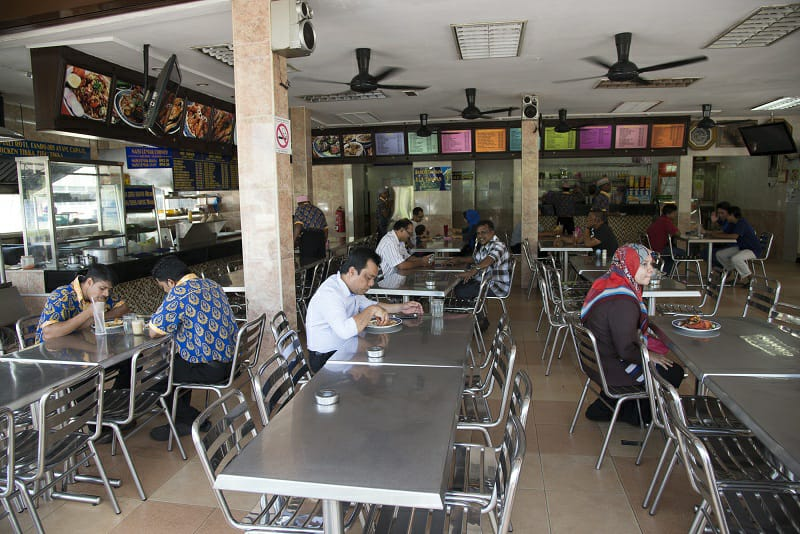
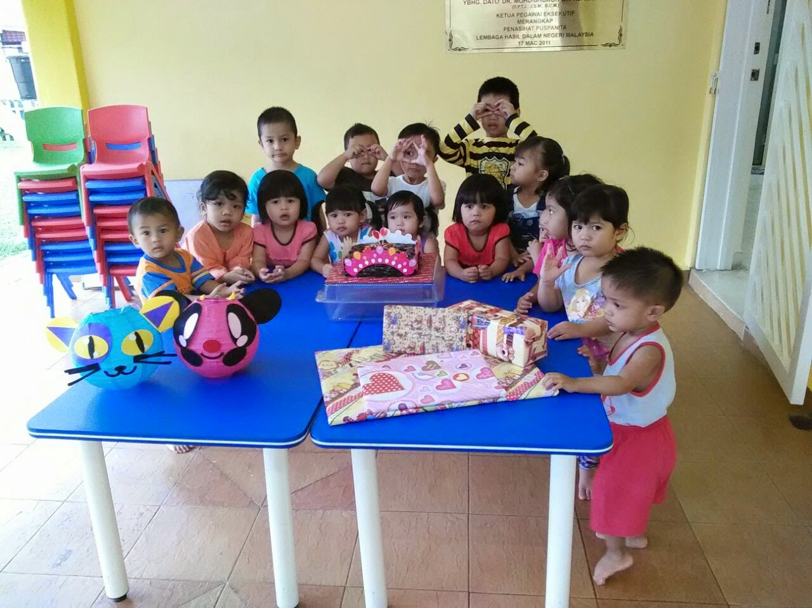
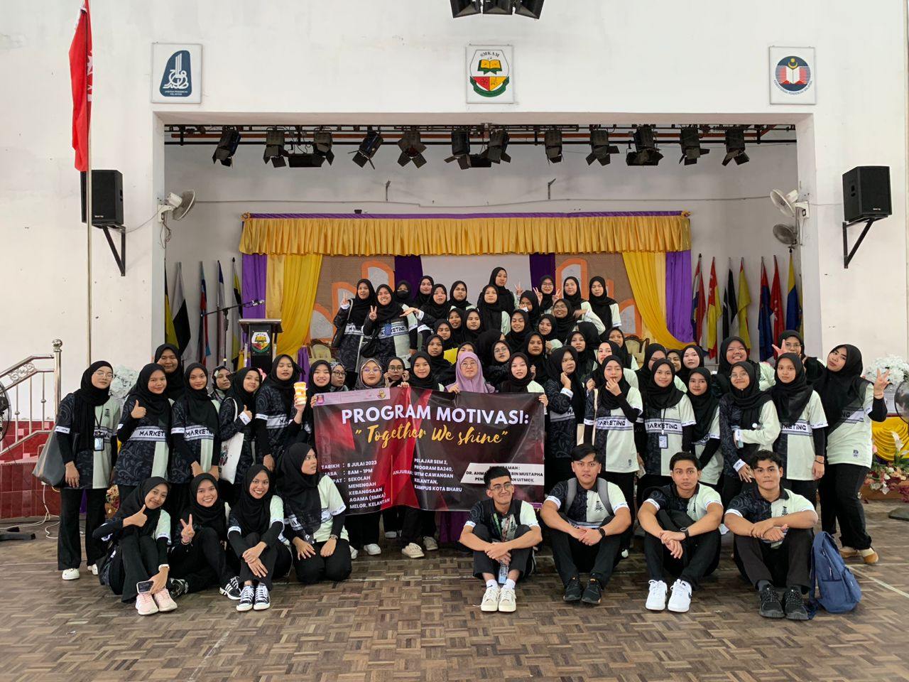
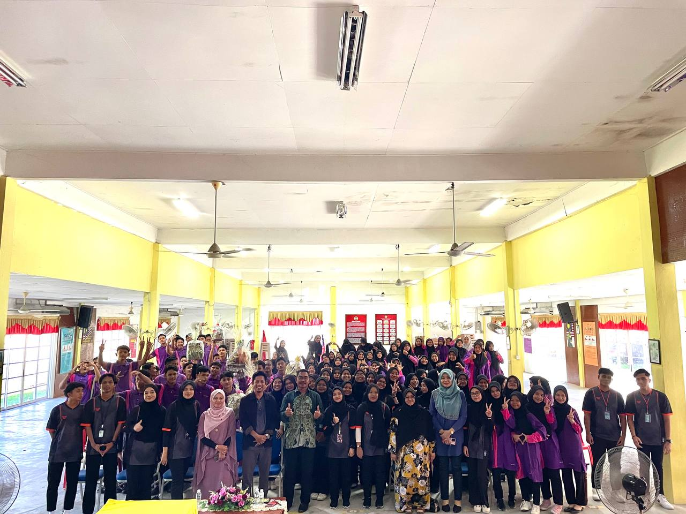

|  |
| WORK EXPERIENCE AT RESTAURANT |
2019
- Interacted with diverse customers daily, enhancing
communication abilities by understanding varied preferences and providing
exceptional service.
- Thrived in a fast-paced environment, efficiently
handling multiple tasks simultaneously, ensuring prompt order delivery,
and maintaining a smooth workflow. |
|  |
| WORK EXPERIENCE AT TASKA |
2022
- Engaged as a dedicated assistant at Taska, providing
efficient administrative support and ensuring smooth day-to-day operations.
- Worked collaboratively within the Taska team, contributing
to the coordination of activities and delivering exceptional service
to clients and stakeholders.
|
|  |
| THE SERVICE COMMUNITY UNDER UITM |
2023
- Engaging in a service community fosters personal growth by
nurturing empathy, leadership skills, and a deeper understanding of societal needs.
It offers a chance to broaden perspectives while developing a sense of responsibility
towards contributing positively to society.
- Being part of a service community cultivates strong bonds
with like-minded individuals, fostering a sense of belonging and shared purpose.
It provides opportunities to collaborate, create meaningful relationships, and work
collectively toward making a tangible difference in the community.
|
|  |
| THE SERVICE COMMUNITY UNDER UITM |
2023
- It facilitated personal growth by stepping out of comfort
zones, embracing new experiences, and broadening perspectives.
- The experience inspired a sense of fulfillment by
witnessing the difference that collective action can make, motivating continued
involvement in community service.
|